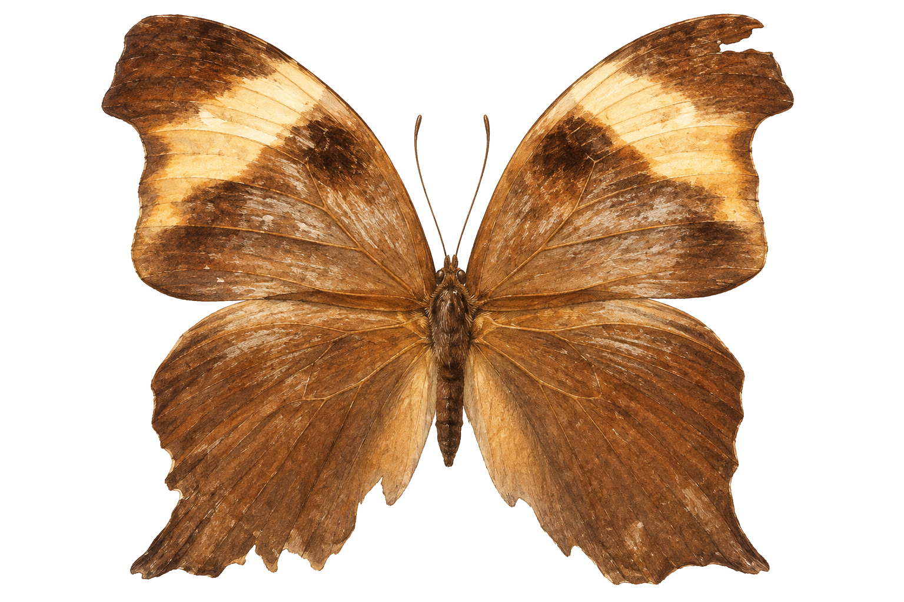

Nymphalidae · 143 / 165
Melanitis boisduvalia
Melanitis boisduvalia

বৈশিষ্ট্য ও শনাক্তকরণ
Melanitis গণের বাদামি প্রজাতি। প্রদেশে অল্পসংখ্যক আগমনের রেকর্ড আছে; একই গণের সাধারণ প্রজাতির সঙ্গে তুলনা দরকার।
স্ত্রী ও পুরুষের পার্থক্য
পর্যালোচিত সূত্রে নির্ভরযোগ্য বাহ্যিক স্ত্রী-পুরুষ পার্থক্য নিশ্চিত করা যায়নি।
আকার
বিদেশি নমুনায় সামনের এক ডানার দৈর্ঘ্য: পুরুষ ৩৬–৩৮ মিমি, স্ত্রী ৪১–৪৫ মিমি; ফিলিপাইনের বোহল দ্বীপের নামিক উপপ্রজাতি। ওকিনাওয়ার পরিমাপের সীমা নয়।
ওকিনাওয়ার দ্বীপে রেকর্ড
ইয়োনাগুনি, ইরিওমোতে, ইশিগাকি ও ওকিনাওয়া দ্বীপে রেকর্ড। নাহায় ১৫ জুলাই ২০২৫ সংগৃহীত নমুনার বিবরণ ২০২৬ সালের প্রকাশনায় উল্লেখিত।
আবাসস্থল
প্রদেশে পছন্দের পরিবেশের বিস্তারিত নিশ্চিত নয়। সংগ্রহের দ্বীপকে পুরো পছন্দের আবাসের সমতুল্য ধরবেন না।
জীবনযাপন ও অতিরিক্ত তথ্য
স্থানীয় পাতায় boiduvalia বানান আছে; এখানে Melanitis boisduvalia হিসেবে সংশোধিত। প্রতিষ্ঠিত বাসিন্দা হিসেবে ধরা হয়নি।
শূককীট ও খাদ্য উদ্ভিদ
পর্যালোচিত স্থানীয় সূত্রে খাদ্যগাছের নির্দিষ্ট তথ্য নেই। ওকিনাওয়ার শূককীটের তথ্য নিশ্চিত করা যায়নি।
তথ্যসূত্র ও সহায়ক পাঠ
- 沖縄蝶類生態図鑑：オビコノマチョウ
ডেটায় উল্লেখিত সূত্র দেখার তারিখ: 2026-11-10 - 岩手大学所蔵論文：Melanitis boisduvaliaの表記
ডেটায় উল্লেখিত সূত্র দেখার তারিখ: 2026-11-10
তথ্য সরবরাহকৃত ডেটার উপর ভিত্তি করে তৈরি (হালনাগাদ: ১০ নভেম্বর ২০২৬)। কোনো দ্বীপের রেকর্ড সেখানে বর্তমান স্থায়ী বসবাস বা সহজে দেখা পাওয়ার নিশ্চয়তা নয়। চিত্র নির্দেশক; শনাক্তকরণে বাস্তব নমুনা ও সূত্র মিলিয়ে দেখুন।